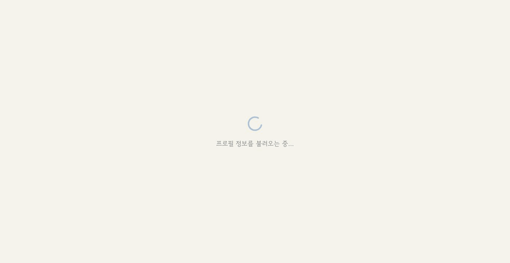
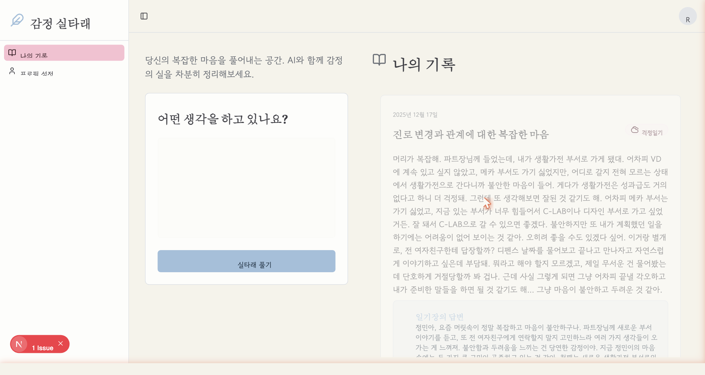

Untangling emotion with AI
ê°ì ì¤íë (Gamjeong Siltarae â "Emotion Thread Ball") is a personal AI journaling app I designed and built to process daily emotional experiences. The premise: emotions rarely arrive neatly labeled. This app is a space to dump complex, tangled feelings through free text, and let an AI help you understand what you're actually feeling.
Over 8 months I used it daily, accumulating 28+ real journal entries. It became the first-stage prototype of Tanglemate, a research system exploring how personal AI can support emotional self-reflection over time.

Real data over 8 months
ì¤íë í기 â the act of unwinding
The interaction is intentionally simple: write whatever is on your mind in free text, then press "ì¤íë í기" (Unwind the Thread). The AI responds with warm, personalized feedback â not generic advice, but a response that reflects your actual history, personality, and ongoing concerns.
Each entry is automatically given a title and categorized. The system maintains a live user profile that updates with each entry, making future responses progressively more personal.

Three voices, one journal
Users can select from three distinct AI personas, each offering a different emotional register for feedback:
Auto-classified emotional context
Every entry is automatically categorized into one of five types: ê±±ì ì¼ê¸° (worry), ì§ë¡ì¼ê¸° (career), ê°ì ì¼ê¸° (emotions), ê°ìì¼ê¸° (reflections), or ì¼ë°ì¼ê¸° (general). This classification enables longitudinal pattern recognition â seeing, over months, what kinds of concerns dominate your mental space.

Stack & system design
Built as a full-stack web app on Firebase Cloud Workstation. The architecture prioritizes persistent user context â the system maintains a live profile JSON that is updated after every entry using a secondary GPT-3.5 call to extract profile updates from the new diary text.
Tanglemate: Stage 1 â Capture
ê°ì ì¤íë is Stage 1 of Tanglemate, a multi-stage research system on AI-mediated emotional memory. Stage 1 focuses on capture â building a rich longitudinal record of emotional experience through natural language journaling. The 28+ real entries accumulated over 8 months form the primary dataset for Tanglemate's later stages, which explore how AI can help surface emotional patterns over time.
The project is part of ongoing CHI research investigating personal AI systems that grow with their users.
More work from RJM-001
Hardware engineer designing physical AI that lives in the world, not behind a screen.
â View all projects